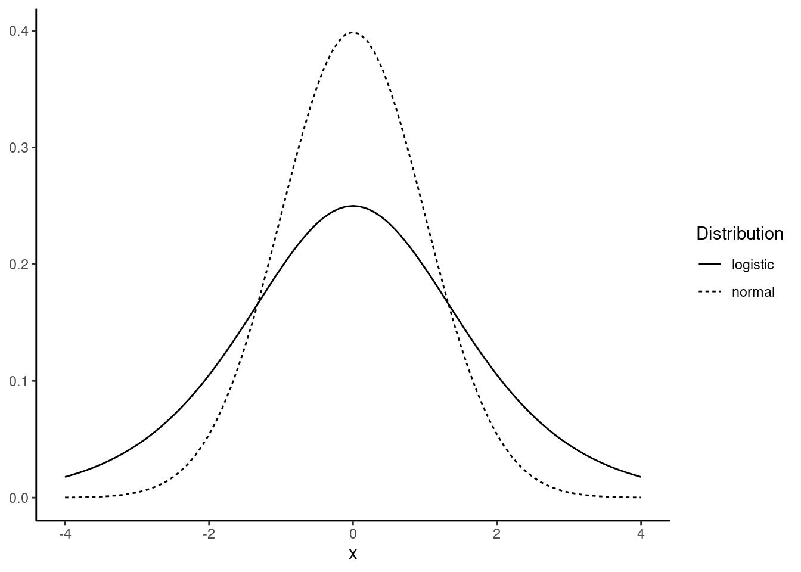
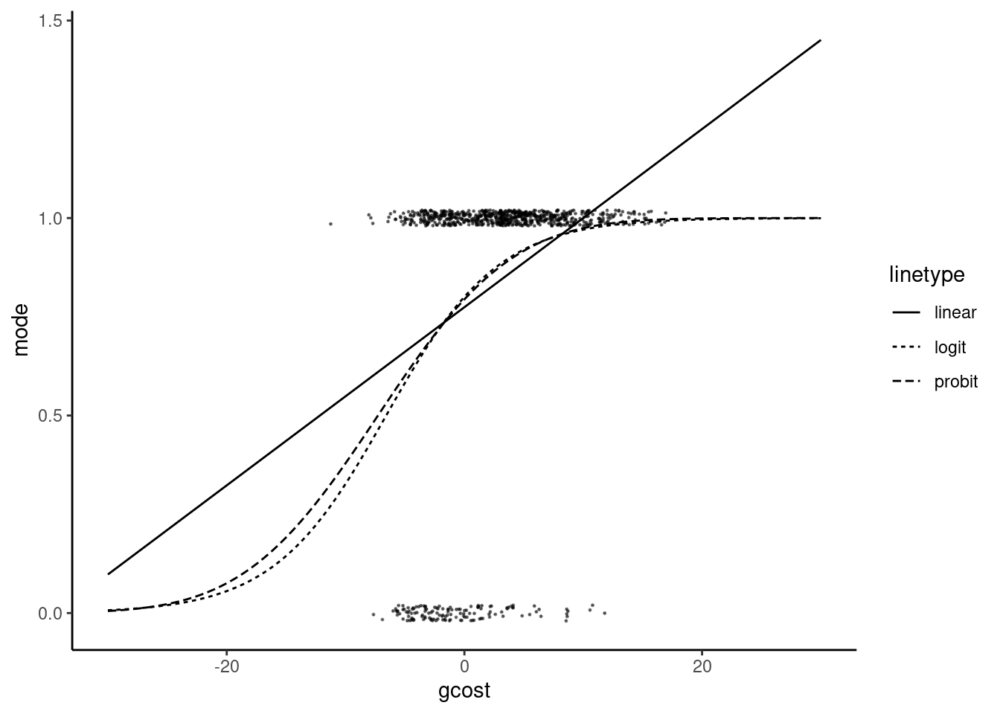
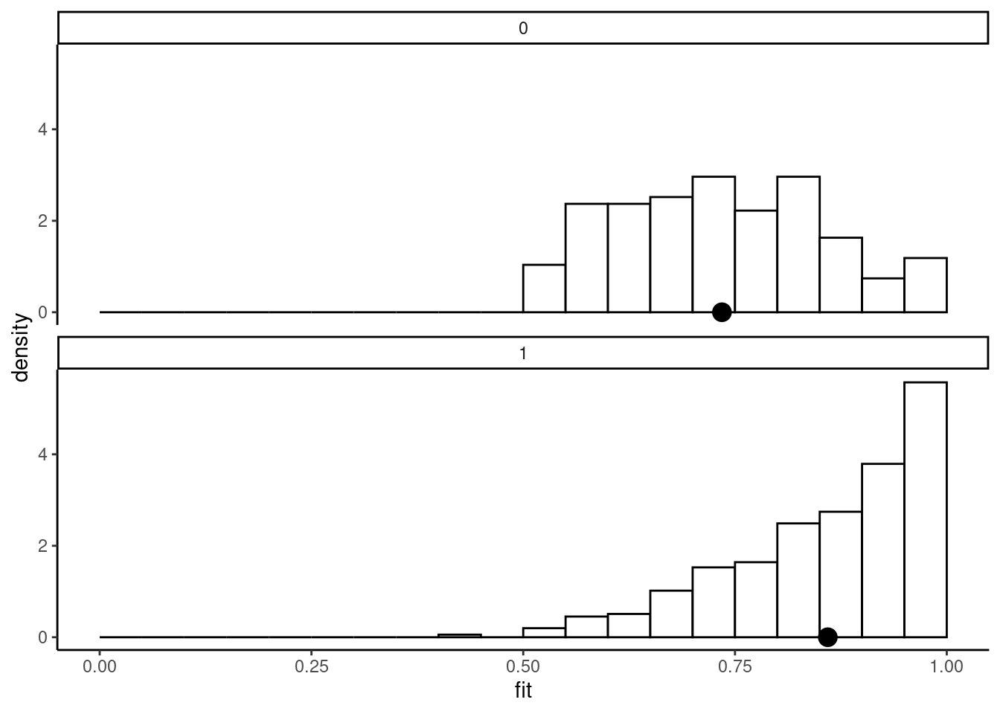
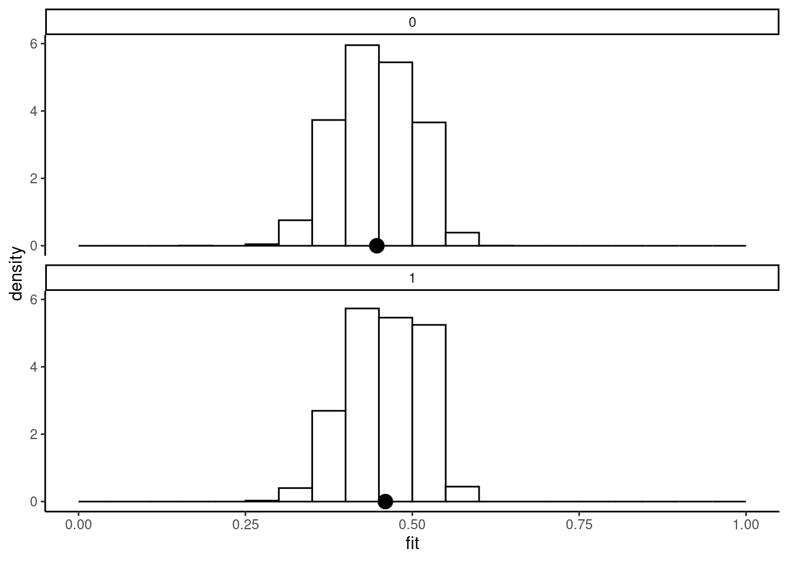
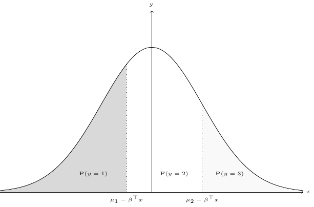

10 Binomial models
Binomial responses can take only two mutually exclusive values that can be, without loss of generality coded as 1 and 0. Common examples are transport mode choice (car vs. public transit), working force participation for women, union membership, etc. For this kind of responses, the statistical distribution is obviously a binomial distribution with one trial. This is a major difference with the estimators that will be reviewed in the other chapters of this part, for which assuming a distribution function for the response is a crucial choice. Denoting 1 as “a success” and 0 as “a fail”, this distribution is fully characterized by a unique parameter, \(\mu\), which is the probability of success and is also the expected value of the variable, as: \(\mbox{E}(y) = (1 - \mu) \times 0 + \mu \times 1 = \mu\). The variance of the distribution is: \(\mbox{V}(y) = (1 - \mu) (0-\mu) ^ 2+ \mu (1-\mu) ^ 2 = \mu(1-\mu)\). It is therefore inversely U-shaped, has a maximum for \(\mu = 0.5\) (with a value of 0.25) and is symmetric around this value. As \(\mu\) tends to 0 or to 1, the variance of \(y\) obviously tends to 0 as almost all the values in a given sample will be either equal to 0 or 1.
To get a regression model for a binomial response, we first define an index function, also called the linear predictor: \(\eta_n = \gamma ^ \top z_n = \alpha + \beta ^ \top x_n\). Then, a function \(F\) is chosen that relates this index function to the unique parameter of the binomial distribution: \(\mu_n =F(\eta_n)\). Different choices of \(F\) leads to different binomial models.
Section 10.1 will present the three most common choices for \(F\) which result in the linear probability, the logit and the probit models. Section 10.2 will present two distinct structural models that can justify the use of these models. Section 10.3 presents the generalized linear models from which the binomial model is a special case. Section 10.4 is devoted to the estimation, the evaluation and the testing of binomial models. Section 10.5 presents relevant estimators when some covariates are endogenous. Finally, Section 10.6 presents the ordered model.
10.1 Functional form and the linear-probability, probit and logit model
The most obvious choice for \(F\) is the identity function, so that \(\mu_n = \eta_n = \alpha + \beta ^ \top x_n\). Therefore, the parameter of the binomial distribution is assumed to be a linear function of the covariates. On the one hand, this choice has several interesting features. It is very simple to estimate, as it is a linear model and, moreover, it can be simply extended to IV estimation. As a linear model, \(\frac{\partial\mu_n}{\partial x_{kn}} = \beta_k\), so that the estimated parameters can be interpreted as the (constant) marginal effects of the corresponding covariate on the probability of success. On the other hand, it has two serious drawbacks. Firstly, the residuals are \(y_n - \hat{\mu}_n\) but, as \(y_n\) is either 0 or 1, the residuals are respectively \(- (\hat{\alpha}+ \hat{\beta} ^ \top x_n)\) or \(1 - (\hat{\alpha} + \hat{\beta} ^ \top x_n)\) and therefore depends on the values of \(x_n\). The linear-probability model, estimated by least-squares is therefore inefficient, as the residuals are heteroskedastic and the standard deviations reported by a least squares program are biased. As usual, the solution would be either to estimate the linear-probability model by GLS or to use heteroskedasticity-robust estimator for the covariance matrix of the estimators. Secondly, as the fitted probabilities of success are linear functions of the covariates, they are not bounded by 0 and 1 and, therefore, it is possible that the model will predict, for some observations, probabilities that would be either negative or greater than 1.
Therefore, it is customary to use a functional form \(F\) which has the following properties:
- \(F(z)\) is increasing in \(z\),
- \(\lim_{z\rightarrow -\infty} F(z) = 0\),
- \(\lim_{z\rightarrow +\infty} F(z) = 1\).
which are the features of any cumulative density function for continuous variables defined on the whole real line support. Two common choices are the normal (\(\Phi\)) and the logistic (\(\Lambda\)) distributions:
\[ \left\{ \begin{array}{rcl} \Phi(z) &=& \displaystyle \int_{-\infty} ^ z \phi(t) dt = \int_{-\infty} ^ z \frac{1}{\sqrt{2\pi}} e ^{-\frac{1}{2}t ^ 2} dt \\ \Lambda(z) &=& \displaystyle \frac{e^z}{1 + e ^ z} \end{array} \right. \]
which lead respectively to the probit and logit models. The density function for the logistic distribution (obtained by taking the derivative of \(\Lambda\)) is \(\lambda(z) = \frac{e^z}{(1 + e ^ z) ^ 2}\). Both density functions are symmetric around 0 and are “bell-shaped”, but they have two important differences, as illustrated in Figure 10.1:
- the variance of the standard normal distribution is 1 and is equal to \(\pi ^ 2/3\) for the logistic distribution,
- the logistic distribution has much heavier tails than the normal density.
As \(\mu_n=F(\eta_n)\) (with \(\eta_n = \alpha + \beta ^ \top x_n\)), the marginal effect of the kth covariate on the probability is:
\[ \frac{\partial \mu_n}{\partial x_{nk}} = \beta_k f(\eta_n) \tag{10.1}\]
where \(f\) is the first derivative of \(F\), which is respectively, for the probit and logit models, \(\phi\) and \(\lambda\), the normal and logistic densities. Therefore, the marginal effect is obtained by multiplying the coefficient by \(f(\eta_n)\) which depends on the value of the covariates for a given observation. Therefore, the marginal effect is observation-dependent, but the ratio of two marginal effects for two covariates is not, as it is obviously, from Equation 10.1, equal to the ratio of the two corresponding coefficients. As the coefficient of proportionality is the normal/logistic density, the maximum marginal effect is for \(\eta_n = 0\), which results in a probability of success of 0.5. The corresponding values of the densities are 0.4 and 0.25 for the normal and logistic densities. Therefore, a rule of thumb to interpret coefficients is to multiply them respectively by 0.4 and 0.25 for the probit and logit model to get an estimation of the maximum marginal effect.
The coefficients of the logit and probit can therefore not be compared. This is due to the fact that they are scaled differently, as the standard deviation of the logistic distribution is \(\pi/\sqrt{3} \approx 1.81\), compared to 1 for the normal distribution. Therefore, it would be tempting to multiply the probit coefficients by 1.81 to compare them to the logit coefficients, but Amemiya (1981) showed that, empirically, the value of 1.6 performs better.
As an example, we consider the data set used by Horowitz (1993) which concerns the transport mode chosen for work trips by a sample of 842 individuals in Washington DC in the late sixties. The response mode is 1 for car and 0 for transit. The covariates are the in- and out-vehicle times (ivtime and ovtime) and the cost differences between car and transit. Therefore, a positive value indicates that car trip is longer/more expensive than the corresponding trip using public transit. We multiply the cost by 8.42 to obtain dollars in 2022 (the CPI for 2022 is 842 with a 100 base in 1967). The generalized cost of a trip is the sum of the monetary cost and the value of the time spent in the transport. We use two-thirds of the minimum hourly wage (about $1.4 in the US in the late sixties, which is about $8 in dollars of 2022) to valuate an hour of transport:
mode_choice <- mode_choice %>%
mutate(cost = cost * 8.42,
gcost = (ivtime + ovtime) * 8 + cost)To fit the three models, we use the micsr::binomreg function, which has a link argument which enables to estimate the three models.
lp_m <- binomreg(mode ~ gcost, mode_choice, link = "identity")
pt_m <- update(lp_m, link = "probit")
lt_m <- update(lp_m, link = "logit")
gaze(lp_m)
## Estimate Std. Error z-value Pr(>|z|)
## gcost 0.02255 0.00236 9.58 <2e-16
gaze(pt_m)
## Estimate Std. Error z-value Pr(>|z|)
## gcost 0.1129 0.0128 8.79 <2e-16
gaze(lt_m)
## Estimate Std. Error z-value Pr(>|z|)
## gcost 0.2112 0.0248 8.52 <2e-16The coefficient of gcost for the linear-probability model is 0.0226, which means that a one dollar increase of the generalized cost differential will increase the probability of using the car by 2.26 percentage points. If we use the previously described rule of thumb to multiply the probit/logit coefficients by 0.4/0.25 in order to have an upper limit for the marginal effect, we get 5.28 and 4.51 percentage points, which are much higher values than for the linear probability model. This is because the coefficient of the linear model estimates the marginal effect at the sample mean. In our sample, the mean value of the covariate is 2.9. To get comparable marginal effects for the probit/logit models, we should first compute \(\hat{\alpha} + \hat{\beta} \bar{x}\) (1.15 and 2 respectively for the probit and logit models) and use these values with the relevant densities (\(\phi(1.15) = 0.206\) and \(\lambda(2) = 0.105\)). At the sample mean, the marginal effects are then 0.023 and 0.022 and are therefore very close to the linear probability model coefficient. The scatterplot and the fitted probability curves are presented o in Figure 10.2.

The fitted probabilities are given by a straight line for the linear probability model and by an S curve for the probit and logit models. These last two curves are very similar except for low values of the covariate. Note also that at the sample mean (\(x = 2.9\)), the slopes of the three curves are very similar. This illustrates the fact that the three models result in similar marginal effects around the mean value of the covariate. The linear probability model is \(\hat{\mu} = 0.774 + 0.023 \times x\). Therefore, \(\hat{\mu}<0\) for \(x < - 0.774 / 0.023 = - 34.33\) and \(\hat{\mu}>1\) for \(x > (1 - 0.774) / 0.023 = 10.007\). In this sample, there are no observations for which \(\hat{\mu} < 0\) but, for 83 out of 842 observations, \(\hat{\mu} > 1\). Finally, the ratio of the logit and probit coefficients is \(0.211 / 0.211 = 1.871\), which is a bit larger than the value of 1.6 suggested by Amemiya (1981).
We now consider a second data set called airbnb, used by Edelman, Luca, and Svirsky (2017). The aim of their study is to analyze the presence of racial discrimination on the Airbnb platform. The authors create guest accounts that differ by the first name chosen. More specifically, the race of the applicant is suggested by the choice of the first name, either a “white” (Emily, Sarah, Greg) or an “African American” (Lakisha or Kareem) first name. The response is acceptance and is 1 if the host gave a positive response and 0 otherwise. In our simplified example, we use only three covariates, guest’s race suggested by the first name guest_race, the price price (in logs) and city, the cities where the experience took place (Baltimore, Dallas, Los Angeles, St. Louis and Washington, DC). Note that the mean of the response is \(0.45\) which is a distinctive feature of this data set compared to the previous one. As the mean value of the probability of success is close to 50% we can expect that the rule of the thumb which consists of multiplying the logit/probit coefficients by 0.25/0.4 would give an estimated value for the marginal effect close to the one directly obtained in the linear probability model.
To summarize the results, we print in Table 10.1 the coefficients of the linear probability model, those of the logit multiplied by 0.25, those of the probit multiplied by 0.4 and the ratio of the logit and the probit coefficients.
| linear | probit | logit | logit / probit | |
|---|---|---|---|---|
| (Intercept) | 0.708 | 0.214 | 0.215 | 1.604 |
| guest_raceblack | -0.084 | -0.085 | -0.085 | 1.602 |
| log(price) | -0.045 | -0.047 | -0.047 | 1.603 |
| cityDallas | 0.023 | 0.023 | 0.023 | 1.593 |
| cityLos-Angeles | 0.015 | 0.016 | 0.016 | 1.590 |
| citySt-Louis | 0.010 | 0.010 | 0.010 | 1.573 |
| cityWashington | -0.037 | -0.037 | -0.037 | 1.611 |
With this rescaling, the three models give similar results. For a 100% increase of the price, the probability of acceptance reduces by 4.16 percentage points. The estimated marginal effect for black guests is about \(-8.5\) percentage points. However, computing a derivative is not relevant in this case as the covariate is a dummy. We should therefore better compute the difference between the probabilities of acceptance, everything other being equal, which means here for a given price of the property and for the reference city, which is Baltimore. The average price being equal to $182 in our sample, we have, for the probit model: \(\Phi(0.497 - 0.213 - 0.107 \times \ln 182) - \Phi(0.497 - 0.213 - 0.107 \times \ln 182) = -0.084\) and for the logit model: \(\Lambda(0.796 - 0.341 - 0.171 \times\ln 182) - \Lambda(0.796 - 0.171\times\ln 182) = -0.084\), which means that, at least in this example, the previous computation of the derivative gives an extremely accurate approximation of the effect of this dummy covariate. Finally, note that the ratio of the logit and probit coefficients is very close to the value of 1.6 advocated by Amemiya (1981).
10.2 Structural models for binomial responses
Two structural models have been proposed to give a theoretical foundation to the probit/logit models. Without loss of generality, we’ll present these two models for the case where there is a unique covariate.
Latent variable and index function
We observe that \(y\) is equal to 0 or 1, but we now assume that this values is related to a latent continuous variable (called \(y^*\)) which is unobserved. \(y=1\) will result for “high” values of \(y ^ *\) and \(y=0\) for low values of \(y ^ *\). More specifically we’ll assume that the observation rule is:
\[ \left\{ \begin{array}{rcl} y = 0 & \mbox{if } & y ^ * \leq \psi \\ y = 1 & \mbox{if } & y ^ * > \psi \\ \end{array} \right. \]
where \(\psi\) is an unknown threshold. Now assume that the value of \(y^ *\) is partly explained by an observable covariate \(x\), the unexplained part being modelized by a random error \(\epsilon\). We then have: \(y ^ * = \alpha + \beta x + \epsilon\), so that the observation rule becomes:
\[ \left\{ \begin{array}{rcl} y = 0 & \mbox{if } & \epsilon \leq \psi - \alpha - \beta x\\ y = 1 & \mbox{if } & \epsilon > \psi - \alpha - \beta x \\ \end{array} \right. \] This observation rule depends on \(\psi - \alpha\) and not on the separate values of \(\psi\) and \(\alpha\). Therefore, \(\psi\) can be set to any arbitrary value, for example 0. Then, the probability of success is: \(1 - F(-\alpha - \beta x)\) where \(F\) is the cumulative density function of \(\epsilon\). For example, if \(\epsilon \sim \mathcal{N} (0, \sigma)\), \(\mbox{P}(y = 1 \mid x) = 1 - \Phi(-(\alpha - \beta x) / \sigma)\). We can see from this expression that only \(\alpha / \sigma\) and \(\beta / \sigma\) can be identified, so that, \(\sigma\) can be set to any arbitrary value, for example 1. Moreover, by the symmetry of the normal distribution, we have \(1 - \Phi(-z) = \Phi(z)\), so that the probability of success becomes \(F(y = 1 \mid x) = \Phi(\alpha +\beta ^\top x)\), which defines the probit model. Assuming that the distribution of \(\epsilon\) is logistic, we have a probability of success equal to \(1 - \Lambda(- \alpha-\beta x)\) which reduces, as the logistic distribution is also symmetric, to: \(F(y = 1 \mid x) = \Lambda(\alpha + \beta x) = e^{\alpha + \beta x} / (1 + e ^ {\alpha + \beta x})\).
Random utility model
Consider now that we can define a utility function for the two alternatives that correspond to the two values of the binomial response. As an example, \(y\) equals 1 or 0 if car or public transit is chosen, and the only covariate \(x\) is the generalized cost. The utility of choosing a transport mode doesn’t depend only on the generalized cost, but also on some other unobserved variables. The effect of these variables are modelized as the realization of a random variable \(\epsilon\). We can therefore define the following random utility functions:
\[ \left\{ \begin{array}{rcl} U_0 &=& \alpha_0 + \beta x_0 + \epsilon_0 \\ U_1 &=& \alpha_1 + \beta x_1 + \epsilon_1 \end{array} \right. \]
where \(\beta\) is the marginal utility of $1. The choice of the individual is deterministic. They will choose the car if the utility of this mode is greater than the utility of public transit. Therefore, we have the following observation rule:
\[ \left\{ \begin{array}{rcl} y = 0 & \mbox{if } & \epsilon_1 - \epsilon_0 \leq - (\alpha_1 - \alpha_0) - \beta (x_1 - x_0)\\ y = 1 & \mbox{if } & \epsilon_1 - \epsilon_0 > - (\alpha_1 - \alpha_0) - \beta (x_1 - x_0)\\ \end{array} \right. \]
Denoting \(\epsilon = \epsilon_1 - \epsilon_0\) the error difference, \(\alpha = \alpha_1 - \alpha_0\) and \(x = x_1 - x_0\) the difference of generalized cost for the two modes, we have:
\[ \left\{ \begin{array}{rcl} y = 0 & \mbox{if } & \epsilon \leq - (\alpha + \beta x)\\ y = 1 & \mbox{if } & \epsilon > - (\alpha + \beta x)\\ \end{array} \right. \]
The probability of “success” (here choosing the car) is therefore \(\mbox{P}(y = 1 \mid x) = 1 - F(- \alpha - \beta x)\), with \(F\) as the cumulative density of \(\epsilon\). If the distribution is symmetric, this probability reduces once again to \(\mbox{P}(y = 1 \mid x) = F(\alpha + \beta x)\), and the probit or logit models are obtained by choosing either the normal or the logistic distribution.
10.3 Binomial model as a generalized linear model
The estimation of binomial models with R is performed using the stats::glm function, which stands for a generalized linear model. It is therefore important to have at least some basic knowledge about generalized linear models to understand the output of the fitted models.
Generalized linear models
The generalized linear models (GLM) are a wide family of models that are intended to extend the linear model. These models have the following components:
- a random component which specifies the distribution of the response, as a member of the exponential family, and in particular the expected value \(\mbox{E}(y) = \mu\),
- a systematic component: some covariates \(x_1, x_2, \ldots x_m\) produce a linear predictor \(\eta_n = \alpha + \beta ^ \top x_n\),
- the link function \(g\) which specifies the relation between the random and the systematic components: \(\eta = g(\mu)\).
The exponential family is defined by the following density function:
\[ f(y;\theta,\phi) = e ^ {\displaystyle\left(y\theta - b(\theta)\right)/\phi + c(y, \phi)} \tag{10.2}\]
\(\theta\) and \(\phi\) being respectively a position and a scale parameter. Linear models are actually a specific case of generalized linear models with a normal distribution and an identity link. We have in this case the following density function:
\[ \phi(y;\mu, \sigma) = \frac{1}{\sqrt{2\pi}\sigma} e ^ {-\frac{1}{2}\frac{(y - \mu)^2}{\sigma ^ 2}}= e^{\frac{y\mu - 0.5 \mu ^ 2}{\sigma ^ 2}- 0.5 y ^ 2 / \sigma ^ 2 - 0.5 \ln(2\pi\sigma ^ 2)} \]
which is a member of the exponential family with \(\theta = \mu\), \(\phi = \sigma^ 2\), \(b(\theta) = 0.5 \theta ^ 2\) and \(c(y, \phi) = - 0.5(y ^ 2 / \phi + \ln(2\pi\phi))\). The first two derivatives of Equation 10.2 with respect to \(\theta\) are:
\[ \left\{ \begin{array}{ccl} \displaystyle\frac{\partial l}{\partial \theta} &=& \displaystyle\frac{1}{\phi}(y - b'(\theta))\\ \displaystyle\frac{\partial ^ 2 l}{\partial \theta ^ 2} &=& \displaystyle-\frac{1}{\phi}b''(\theta) \end{array} \right. \]
As \(\mbox{E}\left(\frac{\partial l}{\partial \theta}\right) = 0\), we have \(\mbox{E}(y)=b'(\theta)\). Moreover, by the information matrix equality: \(\mbox{E}\left(\frac{\partial^2 l}{\partial \theta ^ 2}\right) + \mbox{E}\left(\frac{\partial l}{\partial \theta} ^ 2\right) = 0\), so that \(\mbox{V}(y) = \phi b''(\theta)\).
Going back to the normal (or gaussian) model with an identity link, we have, for a given set of estimates (which leads to the proposed model): \(\hat{\mu}_n = \hat{\eta}_n = \hat{\alpha} + \hat{\beta} ^ \top x_n\) and the log-likelihood function is:
\[ \ln L(y, \hat{\mu}) = - \frac{N}{2}\ln(2 \pi + \sigma ^ 2) - \frac{1}{2\sigma ^2} \sum_{n=1} ^ N (y_n - \hat{\mu}_n) ^ 2 \]
For a hypothetical “perfect” or saturated model with a perfect fit, we would have \(\hat{\mu}_n = y_n\), so that the log-likelihood would be \(- \frac{N}{2}\ln(2 \pi + \sigma ^ 2)\). Minus two times the difference of these two values of the log likelihood function is called the scaled deviance of the proposed model:
\[ D^*(y;\hat\mu) = \sum_{n=1} ^ N\frac{(y_n - \hat{\mu}_n) ^ 2}{\sigma ^ 2} \]
and the deviance is obtained by multiplying the scaled deviance by \(\sigma ^ 2\) (or more generally by the scale parameter \(\phi\)):
\[ D(y; \hat{\mu}) = \sum_{n=1} ^ N(y_n - \hat{\mu}_n) ^ 2 \]
which is simply, for the linear model, the sum of square residuals. For the binomial model, the probability mass function is given by the probability of success \(\mu\) if \(y = 1\) and by the probability of failure \(1 - \mu\) if \(y=0\). This probability can be compactly written as \(\mu ^ y (1 - \mu) ^ {1 - y}\) or as:
\[ f(y;\mu) = e ^ {y \ln \mu + (1 - y) \ln(1 - \mu)}=e ^ {y \ln \frac{\mu}{1 - \mu} + \ln(1 - \mu)}= e^{y\theta - \ln (1 + e ^ \theta)} \]
which is a member of the exponential family with: \(\theta = \ln\frac{\mu}{1 -\mu}\), \(b(\theta) = \ln(1 + e ^ \theta)\), \(c(\theta,y) = 0\) and \(\phi=1\). The model is fully characterized once the link is specified. For the logit model, we have \(\mu = \frac{e ^ \eta}{1+e ^ \eta}\), so that \(\eta = \ln \frac{\mu}{1 - \mu} = g(\mu)\). We then have \(\theta = \eta\), so that the logit link is called the canonical link for binomial models1. As the density for the binomial model returns a probability, the log-likelihood for the saturated model is zero. Therefore, the deviance is:
\[ D(y;\hat{\mu}) = 2 \sum_{n=1} ^ N \left(y_n \ln \hat{\mu}_n + (1 - y_n) \ln(1 - \hat{\mu}_n)\right) \tag{10.3}\]
The null model is a model with only an intercept. In this case, \(\hat{\mu}_n = \hat{\mu}_0\) and the maximum likelihood estimator of \(\mu_0\) is \(\sum_{n=1} ^ N y_n / N\), i.e., the share of success in the sample. The deviance of this model is called the null deviance. An alternative to the deviance as a measure of the fit of the model is the generalized Pearson statistic, defined as:
\[ X ^ 2 = \sum_{n=1} ^ N \frac{(y_n - \hat{\mu}_n) ^ 2}{\mbox{V}(\hat{\mu}_n)}= \sum_{n=1} ^ N \frac{(y_n - \hat{\mu}_n) ^ 2}{\hat{\mu}_n(1 - \hat{\mu}_n)} \tag{10.4}\]
In the linear model, residuals have several interesting properties:
- they are homoskedastic (or at least they may be homoskedastic if the variance of the conditional distribution of the response is constant),
- they have an intuitive meaning, as they are the difference between the actual and the fitted values of the response, the latter being an estimate of the conditional mean of the response,
- they are related to the value of the objective function, which is the sum of square residuals.
The most obvious definition of the residuals for binomial models is the response residuals, which are simply the difference between the response and the prediction of the model (the fitted probability of success \(\hat{\mu}\)). However, these residuals (\(y_n - \hat{\mu}_n\)) are necessarily heteroskedastic, as the variance of \(y_n\) is \(\mu_n(1 - \mu_n)\). Scaling the response residuals by their standard deviation leads to Pearson’s residuals: \((y_n - \hat{\mu}_n) / \sqrt{\hat{\mu}_n(1 - \hat{\mu}_n)}\). The sum of squares of Pearson’s residuals is the generalized Pearson statistic given by Equation 10.4. The deviance residuals are such that the sum of their squares equals the deviance statistic \(D\). They are therefore defined by:
\[(2 y_n - 1) \sqrt{2}\sqrt{y_n \ln \hat{\mu}_n + (1 - y_n) \ln (1 - \hat{\mu}_n)}\]
the term \(2 y_n - 1\) gives a positive sign for the residuals of observations for which \(y_n = 1\) and a negative sign for \(y_n = 0\), as for the two other types of residuals.
Estimation with stats::glm
The estimation of probit/logit models is performed using glm. The interface of glm is very similar to lm, but it has a supplementary argument called family which indicates the distribution of the response.2 The family argument can be either a character string or a function. In the latter case, an argument called link can be specified, which indicates how the linear predictor \(\eta_n=\alpha + \beta ^ \top x_n\) is related to the parameter of the distribution \(\mu_n\) . If we use family = binomial(link = "probit"), then \(\mu_n = \Phi(\eta_n)\). The default choice is "logit" (the canonical link), so that the logit model can be obtained using either:
Remember that, while estimating a generalized linear model, three models are considered:
- the saturated model, for which there is one parameter for every observation and a perfect fit; therefore the log-likelihood, the deviance and the number of degrees of freedom are 0,
- the null model, with only one estimated coefficient and \(N-1\) degrees of freedom,
- the proposed model, with \(K+1\) estimated parameters, and therefore \(N - K - 1\) degrees of freedom.
A call to glm results in an object of class glm which inherits from class lm. As for lm, the summary method computes detailed results for the model and, if not saved in an object, these results are printed:
summary(lgt)
Call:
glm(formula = mode ~ gcost, family = binomial(link = "logit"),
data = mode_choice)
Coefficients:
Estimate Std. Error z value Pr(>|z|)
(Intercept) 1.3905 0.0998 13.94 <2e-16 ***
gcost 0.2112 0.0248 8.52 <2e-16 ***
---
Signif. codes: 0 '***' 0.001 '**' 0.01 '*' 0.05 '.' 0.1 ' ' 1
(Dispersion parameter for binomial family taken to be 1)
Null deviance: 741.33 on 841 degrees of freedom
Residual deviance: 647.39 on 840 degrees of freedom
AIC: 651.4
Number of Fisher Scoring iterations: 5The output indicates the deviance of the null and the proposed model, along with their respective degrees of freedom (\(N - 1 = 841\) and \(N - K - 1 = 840\)). The latter is called the residual deviance. This information is elements of the object returned by stats::glm and can be extracted directly:
lgt$deviance
lgt$null.deviance
lgt$df.residual
lgt$df.nullor, for the fitted model, using the corresponding functions:
deviance(lgt)
df.residual(lgt)We can check that the null deviance can be obtained by fitting a model with only an intercept:
update(lgt, . ~ 1)$deviance
## [1] 741.3The residuals can be extracted from the fitted model using resid. The resid method for glm objects has a type argument which can be equal to "response", "pearson" and "deviance".
The fitted values of the model can be expressed on the scale of the linear predictor or the response. They are available in the returned object as linear.predictors and fitted.values:
lgt$linear.predictors %>% head
## 1 2 3 4 5 6
## 3.2729 0.2389 1.1682 0.6983 3.0313 1.4261
lgt$fitted.values %>% head
## 1 2 3 4 5 6
## 0.9635 0.5594 0.7628 0.6678 0.9540 0.8063The latter can also be obtained using the fitted function:
fitted(lgt)The predict method returns by default the fitted values but can also compute the predicted values for a new data frame. For example, if the difference of generalized cost is increased by 10%:
mode_choice2 <- mode_choice %>% mutate(gcost2 = gcost * 1.1)The predictions can be computed in the scale of the linear predictors or of the response by setting the type argument to "link" (the default) or "response":
10.4 Model estimation, evaluation and testing
Estimation
The stats::glm function uses an iterative weighted least squares method to fit all the flavors of GLM’s models. However, probit and logit models are usually estimated by maximum likelihood. With \(\eta_n = \alpha + \beta ^ \top x_n = \gamma ^ \top z_n\) the linear predictor, the individual contribution to the likelihood is \(F(\eta_n)\) if \(y_n = 1\) and \(1 - F(\eta_n)\) if \(y_n = 0\). The log-likelihood is then:
\[ \ln L = \sum_{n=1} ^ N y_n \ln F(\eta_n) + (1 - y_n) \ln (1 - F(\eta_n) \]
The first-order condition for a maximum is that the vector of the first derivatives:
\[ \frac{\partial \ln L}{\partial \gamma} = \sum_{n=1} ^ N \frac{y_n}{F(\eta_n)}f(\eta_n)z_n - \frac{1 - y_n}{1 - F(\eta_n)}f(\eta_n)z_n= \sum_{n=1} ^ N \frac{y_n - F_n}{F_n\left(1 - F_n\right)}f_n z_n =0 \tag{10.5}\]
is zero, where we defined for convenience \(F_n = F(\eta_n)\) and \(f_n = f(\eta_n)\).
\(\psi_n = \frac{y_n - F_n}{F_n\left(1 - F_n\right)}f_n\) is called the generalized residual3. Generalized residuals have the same property as standard residuals in the linear regression model, they are orthogonal to all the covariates, and they sum to 0 if the regression contains an intercept. The hessian matrix of the second derivatives is:
\[ \frac{\partial ^ 2 \ln L}{\partial \gamma \partial \gamma ^ \top} = - \sum_{n = 1} ^ N \left(\frac{y_n (1 - F_n) ^ 2 + (1 - y_n) F_n ^ 2}{F_n ^ 2 (1 - F_n) ^ 2} f_n ^ 2 - \frac{y_n - F_n}{F_n(1 - F_n)} f_n'\right) z_n z_n^\top \tag{10.6}\]
with \(f'_n\) the derivative of \(f_n\). Taking the expectation, we obtain a much simpler expression: as \(E(y_n) = F_n\), the second term in brackets disappears and the first one simplifies to:
\[ \mbox{E} \left(\frac{\partial ^ 2 \ln L}{\partial \gamma \partial \gamma ^ \top}\right) = - \sum_{n = 1} ^ N \frac{f_n ^ 2}{F_n (1 - F_n)} z_n z_n^\top \tag{10.7}\]
For the logit model, the density is: \(\lambda_n = e ^ {\eta_n} / (1 + e ^ {\eta_n}) ^ 2 = \Lambda_n (1 - \Lambda_n)\) and Equation 10.5 reduces to:
\[ \frac{\partial \ln L}{\partial \gamma} = \sum_{n=1} ^ N \left(y_n - \Lambda_n\right)z_n = 0 \]
This expression is particularly appealing as the generalized residual \(y_n - \Lambda_n\) is the response residual. Moreover, the expression of the matrix of second derivatives is particularly simple:
\[ \frac{\partial ^ 2 \ln L}{\partial \gamma \partial \gamma ^ \top} = - \sum_{n=1} ^ N \lambda_n z_n z_n ^ \top = - \sum_{n=1} ^ N \Lambda_n (1 - \Lambda_n) z_n z_n ^ \top \]
and is equal to its expectation, as it doesn’t depend on \(y\). For the probit model, the vector of response residuals (\(y_n - \Phi_n\)) is not orthogonal to the covariates. Moreover, the formula of the hessian is rather complicated and depends on \(y\). However, its expectation (Equation 10.7) can be expressed compactly in terms of the inverse mills ratio, defined by: \(r(z) = \phi(z) / \Phi(z)\). Noting that \(\phi(z) / (1 - \Phi(z)) = \phi(-z) / \Phi(-z) = r(-z)\) by symmetry of the normal distribution, Equation 10.7 simplifies to:
\[ \mbox{E} \left(\frac{\partial ^ 2 \ln L}{\partial \beta \partial \beta ^ \top}\right) = - \sum_{n = 1} ^ N r(\eta_n) r(- \eta_n)z_n z_n^\top \tag{10.8}\]
The generalized residuals are:
\[ \psi_n = \frac{\phi_n (y_n - \Phi_n)}{\Phi_n (1 - \Phi_n)} \tag{10.9}\]
and they are related to the latent variable \(y^*\) used in Section 10.2.1. Remember that \(y_n ^ * = \mu_n + \epsilon_n\), with \(\mu_n = \alpha + \beta ^ \top x_n\) and \(\epsilon_n \sim \mathcal{N}(0, \sigma)\). Then, considering the latent variable, the residual can be defined as \(\hat{\epsilon}_n = y_n ^ * - \hat{\mu}_n\). This residual can’t be computed because \(y_n ^ *\) is unobserved, we only observe \(y_n = 1\) if \(y_n ^ * > 0\) and \(y_n = 0\) if \(y_n ^ * \leq 0\). However, its expectation can be computed. For \(y_n = 1\):
\[ \mbox{E}(\hat{\epsilon}\mid x, y^* > 0) = \frac{\int_{0} ^ {+\infty} y^*\phi(y^* - \hat{\mu}) dy^*}{\int_{0} ^ {+\infty}\phi(y^* - \hat{\mu})dy^*} - \hat{\mu} = \frac{\int_{-\hat{\mu}} ^ {+\infty} (\hat{\mu} + v)\phi(v) dv}{\int_{-\hat{\mu}} ^ {+\infty}\phi(v)dv} - \hat{\mu} = \frac{\phi(\hat{\mu})}{\Phi(\hat{\mu})} \] Similarly, \(\mbox{E}(\hat{\epsilon}\mid x, y^* \leq 0) = -\frac{\phi(\hat{\mu})}{1 - \Phi(\hat{\mu})}\), so that: \[ \mbox{E}(\hat{\epsilon}_n\mid x_n) = y_n \mbox{E}(\hat{\epsilon}_n\mid x_n, y_n ^* > 0) + (1 - y_n) \mbox{E}(\hat{\epsilon}_n\mid x_n, y_n ^* \leq 0) = \frac{\phi(\hat{\mu}_n)(y_n - \Phi(\hat{\mu}_n))}{\Phi(\hat{\mu}_n)(1 - \Phi(\hat{\mu}_n))} \]
which is the generalized residual defined in Equation 10.9.
The three estimators of the covariance matrix of the estimators can be used. The outer product of the gradient estimator is based on Equation 10.5:
\[ \hat{V}_G(\hat{\gamma}) = \sum_{n = 1} ^ N \left(\frac{y_n - F_n}{F_n (1 - F_n)}f_n\right) ^ 2 z_n z_n^ \top \]
The hessian based estimator is obtained by taking the inverse of the opposite of the hessian given by Equation 10.6. Finally the information-based estimator is obtained by taking the inverse of the opposite of the matrix given by Equation 10.7:
\[ \hat{V}_I(\hat{\gamma}) = \left(\sum_{n = 1} ^ N \frac{f_n ^ 2}{F_n (1 - F_n)} z_n z_n^\top\right) ^ {-1} \] As the hessian for the logit model doesn’t depend on \(y\), the last two estimators are the same for this model. We consider as an example two variants of the mode choice model: the first uses as distinct covariate the monetary cost, in- and out-vehicle time; the second uses as unique covariate the generalized cost.
| unconstrained | constrained | unconstrained | constrained | |
|---|---|---|---|---|
| (Intercept) | 1.062 | 1.390 | 0.664 | 0.821 |
| (0.195) | (0.100) | (0.110) | (0.056) | |
| cost | 0.156 | 0.086 | ||
| (0.036) | (0.020) | |||
| ivtime | 0.545 | 0.308 | ||
| (0.455) | (0.248) | |||
| ovtime | 4.760 | 2.380 | ||
| (0.958) | (0.494) | |||
| gcost | 0.211 | 0.113 | ||
| (0.025) | (0.013) | |||
| Num.Obs. | 842 | 842 | 842 | 842 |
| AIC | 642.6 | 651.4 | 645.5 | 652.5 |
| BIC | 661.6 | 660.9 | 664.5 | 662.0 |
| Log.Lik. | −317.322 | −323.694 | −318.769 | −324.270 |
| Deviance | 634.64 | 647.39 | 637.54 | 648.54 |
| Deviance Null | 741.33 | 741.33 | 741.33 | 741.33 |
We present in Table 10.2 the results of the logit and probit models. By default, the standard deviations are computed using the information-based estimation of the covariance matrix of the estimates. The hessian and the outer-product of the gradient estimators are obtained by setting the vcov argument of vcov or of summary to respectively "hessian" or "opg". For example, to get the gradient-based estimator of the covariance matrix:
vcov(pbt_unconst, vcov = "opg")The micsr::stder function enables to compute the different flavors of the estimated standard errors, which are obtained by taking the square roots of the diagonal elements of the covariance matrix:
vcov(pbt_unconst, vcov = "opg") %>% diag %>% sqrt
## (Intercept) cost ivtime ovtime
## 0.11392 0.02111 0.32552 0.47637
stder(pbt_unconst, vcov = "opg")
## (Intercept) cost ivtime ovtime
## 0.11392 0.02111 0.32552 0.47637The sandwich estimator is obtained using the micsr’s method for sandwich::vcovHC.
sandwich::vcovHC(pbt_unconst) %>% diag %>% sqrt
## (Intercept) cost ivtime ovtime
## 0.10864 0.01863 0.18973 0.54202
stder(pbt_unconst, vcov = vcovHC)
## (Intercept) cost ivtime ovtime
## 0.10864 0.01863 0.18973 0.54202The four estimators of the standard errors are presented in Table 10.3 for the unconstrained probit model. The first three give very similar estimates. The sandwich estimator gives slightly different results, especially a larger value for out-vehicle time and a smaller value for in-vehicle time.
| information | hessian | gradient | sandwich | |
|---|---|---|---|---|
| (Intercept) | 0.1092 | 0.1100 | 0.1139 | 0.1086 |
| cost | 0.0195 | 0.0198 | 0.0211 | 0.0186 |
| ivtime | 0.2382 | 0.2483 | 0.3255 | 0.1897 |
| ovtime | 0.4952 | 0.4938 | 0.4764 | 0.5420 |
Evaluation
Once several models are estimated, the evaluation and the selection process of one of them is based on several indicators. The first indicator is the value of the objective function, which is the log-likelihood. Closely related to the log-likelihood is the deviance, which is the opposite of twice the log-likelihood. Both measures are reported in Table 10.2. These measures favor lightly the logit models compared to the probit models and indicate an important difference between the constrained and unconstrained model. However, the comparison between the constrained and unconstrained models is spurious, because adding further covariates, even if they are irrelevant, necessarily increases the fit of the model. Therefore, we need indicators that penalize highly parametrized models. The two most popular indicators are the Akaike and the Bayes information criteria (AIC and BIC) which are respectively defined by \(\mbox{AIC} = - 2 \ln L + 2 K\) and \(\mbox{BIC} = - 2 \ln L + K \ln N\). They are therefore obtained by augmenting the deviance by a term which is a multiple of the number of fitted parameters: 2 times for the AIC and \(\ln N\) times for the BIC. The rule being to select the model for which the statistic is lower, we can see from Table 10.2 that the AIC leads to the choice of the unconstrained model, and the BIC leads to the choice of the constrained model. This is because the penalization in the BIC is higher, as \(\ln 842 = 6.7\). These statistics can be extracted from the fitted model using the logLik, deviance, BIC and AIC methods for micsr objects, for example:
AIC(pbt_unconst)
## [1] 645.5The logLik method for micsr objects has a type argument which enables to extract the value for the proposed model (type = "mode", the default), the null model or the saturated model:
In linear model, a popular indicator of the quality of a model is the coefficient of determination, called R2. For linear models: \(\sum (y_n - \bar{y}) ^ 2 = \sum (\hat{y}_n - \bar{y}) ^ 2 + \sum \hat{\epsilon}_n ^ 2\) because the vectors of fitted values and residuals are orthogonal. The R2 can therefore be defined using three equivalent formulas:4
\[ R ^ 2 = \frac{\sum (\hat{y}_n - \bar{y}) ^ 2}{\sum (y_n - \bar{y}) ^ 2} = 1 - \frac{\sum \hat{\epsilon}_n^2}{\sum (y_n - \bar{y}) ^ 2} = \hat{\rho}_{y,\hat{y}} ^ 2 \tag{10.10}\]
The first formula is particularly appealing, as it indicates the share of the variance of the response that is explained by the model: it is therefore bounded by 0 and 1. It is 0 if the model has no explanatory power, which means that the fit is equivalent to the null model, i.e., the model with no covariates. It is one for a “perfect” model, i.e., a model for which the vector of residuals is 0.
The three formulas are not equivalent for binomial models and, therefore, there is no unambiguous formula for the R2 for these models. A lot of different formulas have been proposed in the literature.5 The micsr package provides an rsq function which has a type argument. By setting type to "ess", "rss" and "cor", we get the three versions of the R2 described in Equation 10.10. The "rss" version is often called the Efron’s R2(Efron 1978) and was previously proposed by Lave (1970).
rsq(pbt_unconst, type = "ess")
## [1] 0.1164
rsq(pbt_unconst, type = "rss")
## [1] 0.1336
rsq(pbt_unconst, type = "cor")
## [1] 0.1342As seen in Section 5.3.1.2, in the linear model, the R2 is related to statistics that test the hypothesis that all the coefficients of the model except the intercept are 0. This leads to pseudo-R2 that are obtained using any of the three classical tests statistic:
rsq(pbt_unconst, type = "wald")
## [1] 0.08751
rsq(pbt_unconst, type = "lr")
## [1] 0.116
rsq(pbt_unconst, type = "score")
## [1] 0.1111Tjur (2009) proposed an R2 that he called the coefficient of discrimination. This coefficient is the difference between the probability of success for the subsample for which \(y=1\) and the subsample for which \(y=0\). Tjur’s measure is interestingly related to the ESS, the RSS and the correlation measure of the R2. More precisely:
\[ R ^ 2 = \frac{1}{2}\left(R ^ 2_{\mbox{ess}} + R ^ 2_{\mbox{rss}}\right) = \sqrt{R ^ 2_{\mbox{ess}} R ^ 2_{\mbox{cor}}} \]
rsq(pbt_unconst, type = "tjur")
## [1] 0.125It summarizes the difference in the distribution of the fitted values for the two subsamples defined by \(y=1/0\). The plot method for binomreg objects draws these two distributions as an histogram and indicates the average fit for the two groups by a dot on the horizontal axis. Tjur’s R2 is then simply the distance between these two points. For the probit unconstrained model of mode choice, the result is represented in Figure 10.3 and the same plot is presented for the airbnb data set in Figure 10.4.


Figure 10.4 reveals a very poor fit, as the two points are very close. This can be checked by computing the R2:
rsq(pt_a, type = "tjur")
## [1] 0.0127Estrella (1998) proposed a \(R^2\) based on the likelihood ratio statistic comparing the proposed model and the null model, for which only one parameter is estimated. The average likelihood ratio statistic is:
\[ A_{LR} = \frac{2}{N} \left(\ln L - \ln L_0\right) \]
If the model has no explanatory power, \(\ln L = \ln L_0\) so that the minimum value of \(A_{LR}\) is 0. For the saturated model, \(L = 1\), so that the maximum value of \(A_{LR}\) is \(B = - \frac{2}{N} \ln L_0\). The proposed \(R ^ 2\) follows the following differential equation:
\[ \frac{d R^ 2}{1 - d R ^ 2} = \frac{d A}{1 - A/B} \]
which means that the relative change of the \(R ^ 2\) should be equal to the relative change of the average likelihood ratio. The solution to this differential equation is: \(1 - (1 - A/B) ^ B\), so that the \(R ^ 2\) is:
\[ R ^ 2 = 1 - \left(\frac{\ln L}{\ln L_0}\right) ^ {-\frac{2}{N} \ln L_0} \]
rsq(pbt_unconst, type = "estrella")
## [1] 0.1244McFadden (1973) proposed the very popular pseudo-R2:
\[ R ^ 2 = 1 - \frac{\ln L_0}{\ln L} \]
rsq(pbt_unconst, type = "mcfadden")
## [1] 0.14McKelvey and Zavoina (1975) proposed a R2 based on the latent variable. Denoting \(\hat{y}_n ^* = \hat{\alpha}+\hat{\beta} ^ \top x_n\) as the fitted values and \(\bar{y}^*\) as the sample mean, the explained sum of squares is: \(\sum (\hat{y}_n ^ * - \bar{y}^ *) ^ 2\) and the residuals sum of squares is not estimated, but its expected value is \(N\) times the variance of the errors, which is 1 for a probit and \(\pi ^ 2 / 3\) for a logit. The R2 is then obtained by dividing the explained sum of squares by the sum of the explained sum of squares and either \(N\) or \(N\pi ^ 2 / 3\) respectively for the probit and logit models.
rsq(pbt_unconst, type = "mckel_zavo")
## [1] 0.2726
Testing
Tests of nested models
To test nested models, the three tests described in Section 3.6.3 and Section 5.3.1 are available. In Section 10.1, we estimated a model with the generalized cost as a unique covariate, which was computed as: \(g_n = c_n + 8(i_n + o_n)\), where \(c\), \(i\), and \(o\) are the differences in monetary cost, in-vehicle time and out-vehicle time, based on the hypothesis that time value was $8 per hour. The unconstrained model is:
\[ P(y_n = 1) = \Phi(\alpha + \beta_c c_n + \beta_i i_n + \beta_o o_n) \]
The constrained model implies the two following hypotheses: \(H_O: \beta_o = \beta_i = 8 \beta_c\). It is more convenient to rewrite the model so that, under H0, a subset of the parameters are 0:
\[ \begin{array}{rcl} P(y_n = 1) &=& \Phi\left(\alpha + \beta_c \left(c_n + 8 (i_n + o_n)\right) + (\beta_i - 8\beta_c)i_n + (\beta_o - 8 \beta_c) o_n\right)\\ &=& \Phi(\alpha + \beta_c g_n + \beta_i'i_n + \beta_o'o_n) \end{array} \]
where \(\beta_i' = (\beta_i - 8\beta_c)\) and \(\beta_o = (\beta_o - 8\beta_c)\) are the reduced form parameters of the binomial regression with the generalized cost, the in-vehicle and out-vehicle time as covariates. With this parametrization, the set of hypotheses is simply \(\beta_i' = \beta_o' = 0\).
pbt_unconst2 <- binomreg(mode ~ gcost + ivtime + ovtime,
data = mode_choice, link = "probit")Tests can be computed using several functions in the lmtest package (Zeileis and Hothorn 2002). The likelihood ratio test can easily be computed “by hand”, as it is twice the difference of the log-likelihood functions of the unconstrained and constrained models:
as.numeric(2 * (logLik(pbt_unconst) - logLik(pbt_const)))
## [1] 11but lmtest::lrtest is a convenient function which computes the statistic and the probability value:
lmtest::lrtest(pbt_unconst, pbt_const) %>% gaze
## Chisq = 11.002, df: 2, pval = 0.004 The Wald test can be computed using either lmtest::waldtest or car::linearHypothesis. lmtest::waldtest provides two possible syntaxes: two fitted models, as lmtest::lrtest or the fitted unconstrained model and a formula describing the constrained model. car::linearHypothesis, already described in Section 3.6.4.1, uses a character vector to indicate the hypothesis:
lmtest::waldtest(pbt_unconst2, pbt_const) %>% gaze
## Chisq = 10.987, df: 2, pval = 0.004
lmtest::waldtest(pbt_unconst2, . ~ . - ivtime - ovtime) %>% gaze
## Chisq = 10.987, df: 2, pval = 0.004
car::linearHypothesis(pbt_unconst,
c("ivtime = 8 * cost", "ovtime = 8 * cost")) %>%
gaze
## Chisq = 10.987, df: 2, pval = 0.004 Finally, score tests are provided by the micsr::scoretest function. Its first argument is the constrained fitted model and the second one a formula that describes the unconstrained model:
scoretest(pbt_const , . ~ . + ivtime + ovtime) %>% gaze
## chisq = 10.231, df: 2, pval = 0.006The three statistics are very close and the joint hypothesis is rejected at the 1% level.
Conditional moment test
The conditional moment tests have been presented in Section 5.3.2 and the relevant moments are given by Equation 5.44 (for the heteroskedasticity test), Equation 5.43 (for the normal test) and Equation 5.45 (for the omitted variable test). The empirical moments use the powers (up to 4) of the residuals. As the residuals are unobserved, \(\epsilon_n ^ k\) is replaced by their expectations, i.e., by the uncentered moments of the residuals:
\[ m_k = \mbox{E}(\epsilon_n ^ k \mid x_n) = (1-y_n) \mbox{E}(\epsilon_n ^ k \mid x_n, y_n ^ * \leq 0) + y_n \mbox{E}(\epsilon_n ^ k \mid x_n, y_n ^ * > 0) \tag{10.11}\]
For the probit model, the first four moments of the truncated normal distribution should be computed. A recursive formula for the moments of a normal variable \(x \sim \mathcal{N}(\eta, \sigma)\) with \(l\leq x \leq u\) is:6
\[ m_k = (k-1)\sigma ^ 2 m_{k-2} + \eta m_{k-1} - \sigma \frac{u ^ {k-1}\phi\left(\frac{u-\eta}{\sigma}\right) - l ^ {k-1}\phi\left(\frac{l-\eta}{\sigma}\right)} {\Phi\left(\frac{u-\eta}{\sigma}\right) - \Phi\left(\frac{l-\eta}{\sigma}\right)} \tag{10.12}\]
with \(m_{-1} = 0\) and \(m_{0} = 1\). For a residual of the probit model, we have \(\eta = 0\) and \(\sigma = 1\) and the truncature is \(-\mu_n\). We then obtain, for \(y_n^* \leq 0\) (\(l = - \infty\) and \(u = -\mu_n\)) and \(y_n ^ * > 0\) (\(l = - \mu_n\) and \(u = +\infty\)):
\[ \left\{ \begin{array}{rclrcl} \mbox{E}(\epsilon_n ^ k \mid x_n, y_n ^ * \leq 0) &=& (k - 1) m_{k-2} - (- \mu_n) ^ {k-1} \frac{\phi(\mu_n / \sigma)}{1-\Phi(\mu_n / \sigma)} \\ \mbox{E}(\epsilon_n ^ k \mid x_n, y_n ^ * > 0) &=& (k - 1) m_{k-2} + (- \mu_n) ^ {k-1} \frac{\phi(\mu_n / \sigma)}{\Phi(\mu_n / \sigma)} \\ \end{array} \right. \]
Using Equation 10.11, the recursive formula for the kth moment of \(\epsilon\) is simply:
\[ m_k = (k-1) m_{k-2} + (-\mu_n)^{k-1}\frac{(y_n - \Phi(\mu_n / \sigma))\phi(\mu_n / \sigma)}{\Phi(\mu_n / \sigma)(1 - \Phi(\mu_n / \sigma))} = (k-1)m_{k-2} + (-\mu) ^ {k - 1} \psi_n \]
where \(\psi_n\) is the generalized residual defined by Equation 10.9.
The omitted variable test uses the first moment, the homoskedasticity test the second and the normality test the third and fourth. The moments of \(\epsilon_n\), the theoretical moments for the three hypotheses and their empirical counterparts are presented in the following table:7
\[ \begin{array}{clcccc}\hline k & \mbox{hypothesis} & \mbox{E}(\epsilon_n ^ k \mid x_n) & \mbox{theor. moment} & \mbox{emp. moment} \\ \hline 1 & \mbox{omit. var.} & \psi_n & \mbox{E}(\epsilon_n w_n\mid x_n) = 0 & \frac{1}{N}\sum_n \psi_n w_n\\ 2 & \mbox{homosc.} & 1 - \mu_n \psi_n & \mbox{E}((\epsilon_n^2-1) w_n\mid x_n) = 0 & \frac{1}{N}\sum_n \mu_n \psi_n w_n\\ 3 & \mbox{asymetry} & (2 + \mu_n ^ 2) \psi_n &\mbox{E}(\epsilon_n^3\mid x_n) = 0 & \frac{1}{N}\sum_n \mu_n ^ 2 \psi_n\\ 4 & \mbox{kurtosis} & 3 - (3 \mu_n + \mu_n ^ 3)\psi_n & \mbox{E}(\epsilon_n^4 - 3\mid x_n) = 0 & \frac{1}{N} \sum_n \mu_n ^ 3 \psi_n \\\hline \end{array} \tag{10.13}\]
The miscr::cmtest function computes the conditional moment test; the first argument is a fitted model the second one is test which can be equal to "normality", "reset" (for tests for omitted variables) or "heterosc". The two joint hypothesis corresponding to the normality hypothesis can be tested one by one by setting test either to "skewness" or "kurtosis". For the homoskedasticity tests, the set of variables can be selected using the heter_cov argument. By default, all the covariates used in the model are selected. By default, tests are performed using the hessian, but the outer product of the gradient form of the test can be computed by setting opg to TRUE.
cmtest(pbt_unconst, test = "normality") %>% gaze
## chisq = 4.700, df: 2, pval = 0.095
cmtest(pbt_unconst, test = "heterosc") %>% gaze
## chisq = 4.129, df: 3, pval = 0.248
cmtest(pbt_unconst, test = "reset") %>% gaze
## chisq = 3.218, df: 2, pval = 0.200Our probit model seems to be correctly specified, as the three hypotheses are not rejected.
10.5 Endogeneity
We now consider the case where some of the covariates are endogenous. In a linear model, the solution is to use an instrumental variable estimator, which can be estimated using the 2SLS approach and therefore by using only the lm function. We treat in this section the case where the response is binomial, and we consider that the realization of \(y\) is related to the value of a latent variable \(y_n ^ *\), with the usual observation rule: (\(y = 0\) if \(y^* \leq 0\) and \(y = 1\) if \(y^*>0\)). \(y^*\) is a linear function of a set of \(K_1\) exogenous (\(x_1\)) and \(G\) endogenous (\(e\)) covariates:
\[ y_n ^ * = \alpha + \beta ^ \top x_{1n} + \delta ^ \top e_n + \epsilon_n = \gamma ^ \top z_n + \epsilon_n \] with \(\gamma ^ \top = (\alpha, \beta ^ \top, \delta ^ \top)\) and \(z_n ^ \top = (1, x_{1n} ^ \top, e_n ^ \top)\).
The reduced form equation for each endogenous variable is:
\[ e_{gn} = \pi_g ^ \top w_n + \nu_{gn} \]
where \(w_n^\top = (1, x_{1n} ^ \top, x_{2n} ^ \top)\), \(x_{2n}\) being a vector of \(K_2\) external instruments. It is assumed that \(K_2 \geq G\). The joint distribution of \(y_n^*\) and \(w_n\) is normal:
\[ \left(\begin{array}{c} y^* \\ e \end{array}\right) \sim N \left( \left(\begin{array}{c} \gamma ^ \top z_n \\ \Pi w_n \end{array}\right) ; \left( \begin{array}{cc} \sigma_\epsilon ^ 2 & \sigma_{\epsilon\nu} ^ \top \\ \sigma_{\epsilon\nu} & \Sigma_\nu \end{array} \right) \right) \]
where \(\Pi\) is an \((K_1+K_2+1) \times G\) matrix with the \(g\)th line equal to \(\pi_g ^ \top\), \(\Sigma_\nu\) is the \(G\times G\) matrix of covariance of \(\nu\) and \(\sigma_{\epsilon\nu}\) is a vector of length \(G\) containing the covariances between \(\epsilon\) and \(\nu\). Conditional on \(w_n\), the distribution of \(y_n ^ *\) is also normal:
\[ y_n ^ * \mid e_n \sim N \left(\gamma ^ \top z_n + \sigma_{\epsilon\nu} ^ \top \Sigma_\nu ^ {-1}(e_n - \Pi w_n), \sigma_\epsilon ^ 2 - \sigma_{\epsilon\nu} ^\top \Sigma_\nu ^ {-1} \sigma_{\epsilon\nu}\right) \tag{10.14}\]
Let \(\rho = \Sigma_\nu ^ {-1} \sigma_{\epsilon\nu}\) and \(\sigma ^ 2 = \sigma_\epsilon ^ 2 - \sigma_{\epsilon\nu} ^ \top \Sigma_\nu ^ {-1} \sigma_{\epsilon\nu}\). The conditional mean of \(y^*_n\) is then \(\theta ^ \top u_n\), with \(\theta ^ \top = (\gamma ^ \top, \rho ^ \top)\) and \(u_n ^ \top = (z_n ^ \top, \nu_n ^ \top)\) and its conditional variance is \(\sigma ^ 2\).
Maximum likelihood estimation
The joint density of \(y_n^*\) and \(e_n\) can be written as the product of the conditional density of \(y_n^*\) and the marginal density of \(e_n\), which is multivariate normal:
\[ \ln g(e_n) = - \frac{1}{2} \left(G \ln 2\pi + \ln \mid \Sigma_\nu \mid + \nu_n ^ \top \Sigma_\nu ^ {-1} \nu_n\right) \tag{10.15}\]
We consider here the case where \(y_n ^ *\) is not observed, but only its sign. Therefore, we observe \(y_n\) equal to 0 or 1, or \(q_n = 2 y_n - 1\) equal to \(-1\) or \(+1\). The log-likelihood is then \(\ln L = \sum_{n=1} ^ N \ln g(e_n) + \ln f(y_n \mid e_n)\), where \(g(e)\) is given by Equation 10.15 and:
\[ f(y_n \mid d_n) = \Phi\left(q_n\frac{\theta ^ \top u_n}{\sigma} \right) = \Phi\left(q_n\frac{\gamma ^ \top z_n + \sigma_{\epsilon\nu} ^ \top \Sigma_\nu ^ {-1}(e_n - \Pi w_n)}{\sqrt{\sigma_\epsilon ^ 2 - \sigma_{\epsilon\nu} ^\top \Sigma_\nu ^ {-1} \sigma_{\epsilon\nu}}}\right) \tag{10.16}\]
The computation of the estimator is simplified by the use of the Cholesky decomposition of \(\Sigma_\nu ^ {-1}\), i.e., by considering the upper triangular matrix \(C\) such that \(C^\top C= \Sigma_\nu ^ {-1}\). Then, the determinant of \(\Sigma_\nu ^ {-1}\) is simply the product of the squares of the diagonal elements of \(C\). Therefore, \(\ln \mid \Sigma_\nu ^ {-1} \mid = 2 \sum_g \ln C_{gg}\) and \(\ln \mid \Sigma_\nu \mid = - 2 \sum_g \ln C_{gg}\). Denoting \(\Pi ^ * = C \Pi\), \(w_n^* = C w_n\) and \(\rho ^ * = C \sigma_{\epsilon\nu}\) we have : \(\theta ^ \top u_n = \gamma ^ \top z_n + \rho ^ {* \top} (e_n^* - \Pi ^ * w_n)\) and \(\sigma ^ 2 = \sigma_\epsilon ^ 2 - \rho ^{*\top} \rho ^ *\). The marginal density of \(e_n\) and the conditional density of \(y_n\) are then:
\[ \left\{ \begin{array}{rcl} \ln g(e_n) &=& - \frac{1}{2} G \ln 2\pi + \sum_{g = 1} ^ G \ln C_{gg} - \frac{1}{2} (e_n ^ * - \Pi ^ * w_n) ^ \top (e_n ^ * - \Pi ^ * w_n) \\ \ln f(y_n \mid e_n) &=& \Phi\left((2 y_n - 1) \frac{\gamma ^ \top z_n + \rho ^ {* \top} (e_n^* - \Pi ^ * w_n)} {\sqrt{\sigma_\epsilon ^ 2 - \rho ^{*\top} \rho ^ *}}\right) \end{array} \right. \] The maximum likelihood estimator is then obtained by maximizing the log-likelihood function \(\ln L = \sum_{n=1} ^ N \left(\ln g(e_n) + \ln f(y_n \mid e_n)\right)\) with respect to \(\gamma\), \(\rho ^*\), \(\Pi ^ *\) and \(C\). \(\sigma_\epsilon\) is not identified and can be set to 1.
Two-step estimator
From Equation 10.14, we have \(y_n ^ * \sim N \left(\gamma ^ \top z_n + \rho ^ \top \nu_n, \sigma^2\right)\). If \(y_n ^ *\) and \(\nu_n\) were observed, the model could be consistently estimated by regressing \(y_n ^ *\) on \(z_n\) and \(\nu_n\). \(\nu_n\) is actually unknown, but it can be consistently estimated using the estimation of \(\hat{\Pi}\) obtained by maximizing \(\sum_{n=1} ^ N \ln g(e_n)\). This is a seemingly unrelated regression problem, and it is well known that, for the special case where the set of covariates is the same for all the equations, the estimator can be obtained using OLS independently on each equation. From this first step, we obtain \(\hat{\nu}_n = e_n - \hat{\Pi} w_n\) and, in the second step, \(\hat{\gamma}\) and \(\hat{\rho}\) are obtained by regressing \(y_n ^*\) on \(z_n\) and \(\hat{\nu}_n\).
Regressing \(y_n ^ *\) on a vector of 1, \(x_{1n}\), \(e_n\) and \(\hat{\nu}_n\) is one way to obtain the instrumental variable estimator. This approach (called control function) is identical to the 2SLS estimator but provides supplementary estimates (\(\hat{\rho}\) associated with \(\hat{\nu}_n\)) that can be used to test the hypothesis of exogeneity. If \(G = 1\), the test can be performed using the Student statistic. If \(G > 1\), the joint hypothesis that \(\rho= 0\) can be tested using a Wald test, the statistic being a \(\chi ^ 2\) with \(G\) degrees of freedom under the null hypothesis of exogeneity.
This two-step instrumental variable estimator and test has been extended for the case where \(y_n ^*\) is only partially observed by Smith and Blundell (1986) and Rivers and Vuong (1988) (respectively for the tobit and the probit models). It can be computed as follows:
- compute the OLS estimator of \(\pi_g\) for the G endogenous variables and retrieve the residuals \(\hat{\nu}_{gn}\),
- estimate \(\theta ^ \top = (\gamma ^ \top, \rho^\top)\) using a probit model with \(z_n\), and \(\hat{\nu}_n\) as covariates,
- test the hypothesis that \(\rho = 0\).
As it is customary for two-step estimators, the covariance matrix returned by the probit model is inconsistent because it doesn’t take into account the fact that \(\nu_n\) is unknown and is replaced by a consistent estimator. Denoting \(\pi = \mbox{vec} \,\Pi\), the first-order approximation of the vector of scores is:
\[ \frac{\partial \ln L}{\partial \theta}(\hat{\theta}, \hat{\pi}) \approx \frac{\partial \ln L}{\partial \theta} + \frac{\partial \ln^2 L}{\partial \theta \partial \theta ^ \top}\times (\hat{\theta} - \theta) + \frac{\partial \ln^2 L}{\partial \theta \partial \pi ^ \top}\times (\hat{\pi} - \pi) \]
Taking expectation and solving for \(\hat{\theta} - \theta\), we get:
\[ \hat{\theta} - \theta = \mbox{E}\left(- \frac{\partial ^ 2 \ln L}{\partial \theta \partial \theta ^ \top}\right)^{-1} \left(\frac{\partial \ln L}{\partial \theta} + \mbox{E}\left(\frac{\partial ^ 2 \ln L}{\partial \theta \partial\pi ^ \top}\right) (\hat{\pi} - \pi)\right) = A ^ {-1}\left(\frac{\partial \ln L}{\partial \theta} + B (\hat{\pi} - \pi)\right) \]
As the two terms in the brackets are uncorrelated and using the information matrix equality, we get:
\[ \hat{V}({\hat{\theta}}) = A ^ {-1} + A ^ {-1} B \hat{V}(\hat{\pi}) B ^ \top A ^ {-1} \]
\(A\) and \(B\) contain the second derivatives of the individual contribution to the log-likelihood function for the probit model. These are, defining: \(\eta_n = \gamma ^ \top z_n + \rho \hat{\nu}_n\) and \(r_n = \phi(\eta_n) / (1 - \Phi(\eta_n))\):
\[ \frac{\partial ^ 2\ln l_n}{\partial \eta_n \partial \eta_n ^ \top} = - r_n \left(r_n + \eta_n \right) = - \psi_n \]
More precisely, \(A = \sum_{n=1} ^ N \psi_ n \hat{u}_n \hat{u}_n ^ \top\) and \(B = \sum_{n=1} ^ N \rho ^ \top \otimes \psi_n \hat{u}_n w_n ^ \top\) or, defining \(\Psi\) a diagonal matrix of dimension \(N\) containing \(\psi_n\): \(A = \hat{U} ^ \top \Psi \hat{U}\) and \(B = \hat{U} ^ \top \Psi W\), with \(\hat{U}\) the \(N\times (K_1 + 2 G + 1)\) matrix with rows \((1, x_{1n} ^ \top, e_n ^ \top, \hat{\nu}_n ^\top)\) and \(W\) the \(N\times (K_1 + K_2 + 1)\) matrix with rows \(w_n^\top = (1, x_{1n} ^ \top, x_{2n} ^ \top)\). As \(\hat{V}(\hat{\pi})\) is the variance of the SUR estimator with identical covariates, \(\hat{V}(\hat{\pi}) = \hat{\Sigma}_\nu \otimes (W ^ \top W) ^ {-1}\) and the expression further simplifies to:
\[ \hat{V}(\hat{\theta}) = (\hat{U} ^ \top \Psi \hat{U}) ^ {-1} + (\hat{\rho} ^ \top \hat{\Sigma} \hat{\rho})\times (\hat{U} ^ \top \Psi \hat{U}) ^ {-1} (\hat{U} ^ \top \Psi W) (W ^ \top W) ^ {-1} (W ^ \top \Psi \hat{U}) (\hat{U} ^ \top \Psi \hat{U}) ^ {-1} \]
Smith and Blundell (1986) proposed an endogeneity test based on the two-step estimator. As for the linear instrumental variable estimator, it is a Wald test that \(\rho = 0\), but it uses the simple probit estimation of the covariance matrix.
Minimum \(\chi ^ 2\) estimator
Newey (1987) argued that the minimum chi-square estimator (Amemiya 1978’s) can be used in this context and is more efficient than the two-step estimator. This estimator is computed in five steps:
- compute the OLS estimator of \(\pi_g\) for the \(G\) endogenous variables and compute the fitted values \(\hat{d}_{gn}\) and the residuals \(\hat{\nu}_{gn}\) of these regressions,
- using a probit regress \(y\) on the whole set of exogenous variables \(w_n ^ \top = (1, x_{n1} ^ \top, x_{n2} ^ \top)\) and on the previously computed residuals \(\hat{\nu}_{gn}\). Save the coefficients of \(v_n\) (\(\hat{\alpha}\)), of \(\hat{\nu}_n\) (\(\hat{\lambda}\)) and the part of the covariance matrix that corresponds to \(\alpha\) \(\hat{\Sigma}_{1}\),
- using a probit, regress \(y\) on \(\hat{u}_n^\top = (1, x_1^\top, \hat{\nu}_n ^ \top)\) and on the fitted values \(\hat{d}_{gn}\) computed on the first step; save the coefficients of the fitted values \(\hat{\delta}\) and compute \(\hat{\rho} = \hat{\lambda} - \hat{\delta}\),
- regress \(\hat{\rho} ^ \top e_n\) on the whole set of exogenous variables \(w_n\), save the covariance matrix \(\hat{\Sigma}_{2}\) and compute \(\hat{\Omega} = \hat{\Sigma}_1 + \hat{\Sigma}_2\),
- compute the minimum \(\chi^2\) estimator \(\hat{\gamma}\) and its variance \(\hat{V}(\hat{\gamma})\):
\[ \hat{V}(\hat{\gamma}) = (Z^\top W) (W^\top W) ^ {-1} \hat{\Omega} ^ {-1} (W^\top W) ^ {-1} (W ^ \top Z) \]
\[\hat{\gamma} = \hat{V}(\hat{\gamma}) (Z^\top W) (W^\top W) ^ {-1} \hat{\Omega} ^ {-1} \]
Application
Adkins, Carter, and Simpson (2007) and Adkins (2012) analyzed the effect of managerial incentives on the use of foreign-exchange derivatives for hedging by U.S. bank holding companies, for the 1996-2000 period. The dependent variable federiv is 1 if the bank uses foreign-exchange derivatives.
The first set of covariates concerns ownership. When managers have a higher ownership position in the bank, their behavior is more in line with the preferences of shareholders, and they therefore have an incentive to take risk: the logarithm of the percentage of total shares outstanding that are owned by officers and directors (linsown) should therefore have a negative effect on the probability of using foreign-exchange derivatives. However, incentives provided by regulation may dominate the expected incentive relation and lead to a negative effect on the probability. On the contrary, institutional blockholders have imperfect information and, therefore, the logarithm of the percentage of total shares outstanding that are owned by all institutional investors (linstown) should have a negative effect on the probability of using foreign-exchange derivatives.
The second set of covariates concerns CEO compensation. Value of option awards (optval) should induce managers to take more risk and therefore should have a negative effect on the probability. On the contrary, cash bonus (bonus) may increase the probability of hedging in order to decrease variability in the firm’s cash flows.
The other covariates are the leverage (eqrat), the logarithm of total assets (ltass), the return on equity (roe), the market to book ratio (mktbt), the foreign to total interest income ratio (perfor), a derivative dealer activity dummy (dealdum), dividends paid (div) and the year from 1996 to 2000 (year).
Three covariates are suspected to be endogenous: the leverage (eqrat), the option awards optval and the bonus, (bonus). The external instruments are the number of employees (no_emp), of subsidiaries (no_subs) and of officies (no_off), the CEO age (ceo_age), the 12 month maturity mismatch (gap) and the ratio of cash flow to total assets (cfa).
The instrumental variable probit estimator is obtained using binomreg with link = "probit" and a two-part formula, containing the covariates and the instruments. The method argument (the default "ml", "twosteps" and "min") indicates the estimation method. The results for the three estimators are presented in Table 10.4. To save place, we only present the coefficients for the covariates of main interest.
form <- federiv ~ eqrat + optval + bonus + ltass +
linsown + linstown + roe + mktbk +
perfor + dealdum + div + year |
. - eqrat - bonus - optval + no_emp +
no_subs + no_off + ceo_age + gap + cfa
bank_msq <- binomreg(form, data = federiv, link = "probit",
method = "minchisq")
bank_ml <- update(bank_msq, method = "ml")
bank_2st <- update(bank_msq, method = "twosteps")| minchisq | two-step | ML | |
|---|---|---|---|
| linsown | 0.259 | 0.257 | 0.145 |
| (0.116) | (0.116) | (0.062) | |
| linstown | 0.370 | 0.372 | 0.202 |
| (0.135) | (0.135) | (0.106) | |
| eqrat | 21.775 | 21.825 | 12.491 |
| (13.386) | (13.424) | (5.354) | |
| optval | −0.088 | −0.087 | −0.051 |
| (0.053) | (0.053) | (0.017) | |
| bonus | 1.757 | 1.735 | 1.018 |
| (0.888) | (0.888) | (0.187) | |
| rho_eqrat | −25.506 | −0.224 | |
| (13.835) | (0.087) | ||
| rho_optval | 0.096 | 0.347 | |
| (0.049) | (0.075) | ||
| rho_bonus | −1.672 | −0.730 | |
| (0.875) | (0.140) | ||
| Num.Obs. | 794 | 794 | 794 |
The coefficients of linstown, bonus and optval have the expected sign. linsown has a positive sign, which must be driven by the strength of the regulatory constraints. Note that the standard deviations are much smaller for the highly parametrized ML estimator, compared to the two-step and the minimum \(\chi^2\) estimator.
To perform the endogeneity test, we first estimate the two-step estimator with the probit estimator of the covariance matrix of the coefficients. This is performed by setting the supplementary argument robust to FALSE:
bank_2s_nr <- binomreg(form, data = federiv, link = "probit",
method = "twosteps", robust = FALSE)Then, a Wald test that \(\rho = 0\) can be performed, using for example car::linearHypothesis:
bank_2s_nr %>% car::linearHypothesis(c("rho_eqrat = 0",
"rho_optval = 0",
"rho_bonus = 0")) %>% gaze
## Chisq = 7.547, df: 3, pval = 0.056or more simply using the miscsr::endogtest function:
endogtest(form, federiv) %>% gaze
## chisq = 7.547, df: 3, pval = 0.056The hypothesis of no endogeneity is rejected at the 10%, but not at the 5% level.
10.6 Ordered models
An ordered model is a model for which the response can take \(J\) distinct values (with \(J>2\)). The construction of the model is very similar to the one of the binomial model. We consider, as in Section 10.2.1, a latent variable equal to the sum of a linear combination of the covariates and an error:
\[ y^* = \alpha + \beta^\top x + \epsilon \]
Denoting \(\mu = (\mu_0, \mu_1, \mu_1, \ldots, \mu_{J})\) a vector of parameters, with \(\mu_0 = -\infty\) and \(\mu_{J}= +\infty\), the rule of observation for the different values of \(y\) is then:
\[ \left\{ \begin{array}{rclcclccc} y &=& 1 & \Leftrightarrow & \mu_0 &\leq& \alpha + \beta^\top x + \epsilon &\leq& \mu_1 \\ y &=& 2 & \Leftrightarrow & \mu_1 &\leq& \alpha + \beta^\top x + \epsilon &\leq& \mu_2 \\ &\vdots & & \vdots && \vdots & & \vdots\\ y &=& J-1 & \Leftrightarrow & \mu_{J-2} &\leq& \alpha + \beta^\top x + \epsilon &\leq& \mu_{J-1} \\ y &=& J & \Leftrightarrow & \mu_{J-1} &\leq& \alpha + \beta^\top x + \epsilon &\leq& \mu_{J}\\ \end{array} \right. \]
For \(y = 1\), subtracting \(\alpha\) from the three terms of the inequality, we get: \(\mu_0 - \alpha \leq \beta ^ \top x + \epsilon \leq \mu_1 - \alpha\). Therefore, the observation rule doesn’t depend on \(\mu_0\), \(\mu_1\) and \(\alpha\), but on \(\mu_0-\alpha\) and \(\mu_1 - \alpha\). Therefore, \(\mu_0\), \(\mu_1\) and \(\alpha\) are not identified and, for example, \(\alpha\) can be set to 0. The same reasoning applies to the other values of \(y\). Denoting \(F\) the cumulative density of \(\epsilon\), the probability for a given value \(j\) of \(y\) is:
\[ \mbox{P}(y_n=j)=F(\mu_{j} - \beta^\top x_n) - F(\mu_{j-1} - \beta^\top x_n) \]
The probabilities are represented in Figure 10.5 for \(J = 3\) by the areas under the density curve of \(\epsilon\) between two consecutive values of \(\mu_j - \beta ^ \top x\) (with \(\mu_0 = -\infty\) and \(\mu_3 = + \infty\)).

Consider now an increase of a covariate \(x_k\) and suppose that the associated coefficient \(\beta_k\) is positive. Then, all the values of \(\mu_j - \beta^ \top x\) decrease by the same amount \(-\beta_k \Delta x_k\). The new probabilities are represented in Figure 10.6.

The dashed area represents an increase of the probability that \(y = 2\) and a reduction of the probability that \(y = 1\), and the dotted area a reduction of the probability that \(y = 2\) and an increase of the probability that \(y = 3\). Therefore, the marginal effect of \(x_k\) is positive for \(\mbox{P}(y = 3)\), negative for \(\mbox{P}(y = 1)\) and ambiguous for \(\mbox{P}(y = 2)\). For small changes of \(x_k\) the dashed and dotted areas are proportional to the densities for the two limits of the range of \(\epsilon\) for which \(y = 2\). Therefore \(\mbox{P}(y = 2)\) increases if the density for the lower limit (\(\mu_1 - \beta ^ \top x\)) is greater than the density for the upper limit (\(\mu_2 - \beta ^ \top x\)), which is the case here, and decrease otherwise. More generally, when \(y\) takes \(J\) values, the effect on the probabilities is unambiguous only for \(\mbox{P}(y = 1)\) and \(\mbox{P}(y = J)\). The probability of the outcome can be written compactly using the \(\mathbf{1}(x)\) function which equals 1 if \(x\) is true and 0 otherwise:
\[ \mbox{P}(y_n)=\sum_{j=1}^J \mathbf{1}(y_n = j)\left[F(\mu_{j} - \beta^\top x_n) - F(\mu_{j-1} - \beta^\top x_n)\right] \tag{10.17}\]
For a sample of size \(N\), the log-likelihood function is obtained by summing the logarithms of Equation 10.17 for all the observations:
\[ \ln L = \sum_{n=1}^{N} \sum_{j = 1}^J\mathbf{1}(y_n = j)\ln \left[F(\mu_j - \beta^\top x_n) - F(\mu_{j-1} - \beta^\top x_n)\right] \]
As for the binomial model, the most common choices for the distribution of \(\epsilon\) are the normal and the logistic distributions, which lead respectively to the ordered probit and logit models.
As an example, we consider the article of Abiad and Mody (2005) who study the determinants of financial reform. The data set, called fin_reform, is a panel of 35 countries for 24 years (from 1973 to 1996). The variable of interest fli is an index of financial liberalization, which takes integer values from 0 to 18. Denote \(I_{nt}\) the value of this variable for country \(n\) on year \(t\) divided by 18, so that \(I_{nt}\) equal to 0 or to 1 indicates respectively no and perfect financial liberalization. It is assumed that the yearly variation of the index is given by the following equation, denoting \(I^*_{nt}\) the desired value of \(I_{nt}\):
\[ \Delta I_{nt} = \alpha(I ^ *_{nt} - I_{n(t-1)}) + \epsilon_{nt} \] \(I^*\) is unobserved and is supposed to be equal to 1, so that the target is perfect financial liberalization. \(\alpha\) is an adjustment factor and is supposed to be equal to \(\alpha = \theta I_{n(t-1)}\), so that the resistance to reform is a function of the state of liberalization. We then have:
\[ \Delta I_{nt} = \theta I_{n(t-1)}(1 - I_{n(t-1)}) + \epsilon_{nt} \]
The response is therefore the change in the index and the main covariate is indxl \(\times\) (1 - indxl) where indxl is the lagged value of the index on the 0-1 scale. The computation of these variables are presented below; note the use of the lag function on the data frame grouped by country. This ensures that the lag value for the first year (1973) for the second country (Australia) is NA and not the value of the first country (Argentina) for the last year (1996).
The authors test the possibility of regional diffusion: countries within a region would then be induced to catch up with the highest level of liberalization observed within the region. Therefore, they introduce a covariate which is equal to the difference between the previous value of the index and the maximum value in the group of country:
g <- fin_reform %>% group_by(region, year) %>%
summarise(max_indxl = max(indxl))
fin_reform <- fin_reform %>% left_join(g) %>%
mutate(catchup = max_indxl - indxl)Other covariates are the political orientation of the government (pol, a factor with levels center, left and right) and dummies for first year of office (dum_1yofc), for balance of payments and bank crises in the first two previous years (dum_bop and dum_bank) and for recession recession (growth rate gdpg negative) and high inflation hinfl (inflation rate infl greater than 50%). The relevant dummies are computed below:
fin_reform <- fin_reform %>%
mutate(dum_bop = ifelse(bop | lag(bop) | (! is.na(lag(bop, 2)) &
lag(bop, 2)), 1, 0),
dum_bank = ifelse(bank | lag(bank) | (! is.na(lag(bank, 2)) &
lag(bank, 2)), 1, 0),
dum_1yofc = ifelse(!is.na(yofc) & yofc == 1, 1, 0),
recession = ifelse(gdpg <= 0, 1, 0),
hinfl = ifelse(infl > 50, 1, 0))Ordered models can be fitted using MASS::polr, which has a method argument similar to the link argument of the binomial function used as a family argument in glm. It can be set to logistic (called logit for binomial) , probit, loglog, cloglog and cauchy. As for binomial models, probit and logit are by far the most used links. Another implementation of the ordered model is micsr::ordreg. Table 10.5 presents the three specifications presented by Abiad and Mody (2005), table 7, page 78.
| (1) | (2) | (3) | |
|---|---|---|---|
| rhs1 | 4.001*** | 4.652*** | 4.188*** |
| (1.008) | (1.031) | (1.048) | |
| catchup | 0.842** | 0.897** | 0.993** |
| (0.310) | (0.321) | (0.353) | |
| dum_bop | 0.526** | 0.439* | |
| (0.183) | (0.187) | ||
| dum_bank | −1.025*** | −0.993*** | |
| (0.279) | (0.280) | ||
| recession | −0.071 | −0.056 | |
| (0.260) | (0.262) | ||
| hinfl | −0.161 | −0.264 | |
| (0.298) | (0.307) | ||
| dum_1yofc | 0.194 | ||
| (0.208) | |||
| imf | 0.326+ | ||
| (0.195) | |||
| usint | −0.066+ | ||
| (0.034) | |||
| polleft | 0.242 | ||
| (0.239) | |||
| polright | 0.169 | ||
| (0.208) | |||
| open | −0.001 | ||
| (0.002) | |||
| Num.Obs. | 805 | 805 | 805 |
| AIC | 1555.3 | 1542.1 | 1544.4 |
| BIC | 1625.7 | 1631.2 | 1661.7 |
| Log.Lik. | −762.662 | −752.052 | −747.202 |
| + p |
The first column presents the result of the model with the resistance to reform and the diffusion covariates which have both of the expected signs and are significant. In the second column, the shocks covariates are added, and only the balance of payments and the bank crisis dummies are significant. Finally, in the third column, the political and economic structure covariates are added, but none of them are significant.
Abiad, Abdul, and Ashoka Mody. 2005. “Financial Reform: What Shakes It? What Shapes It?” American Economic Review 95 (1): 66–88. https://doi.org/10.1257/0002828053828699.
Adkins, Lee C. 2012. “Testing Parameter Significance in Instrumental Variables Probit Estimators: Some Simulation.” Journal of Statistical Computation and Simulation 82: 1415–36. https://api.semanticscholar.org/CorpusID:18158285.
Adkins, Lee C., David A. Carter, and W. Gary Simpson. 2007. “Managerial Incentives And The Use Of Foreign‐Exchange Derivatives By Banks.” Journal of Financial Research 30 (3): 399–413. https://doi.org/10.1111/j.1475-6803.2007.
Amemiya, Takeshi. 1978. “The Estimation of a Simultaneous Equation Generalized Probit Model.” Econometrica 46 (5): 1193–1205. https://EconPapers.repec.org/RePEc:ecm:emetrp:v:46:y:1978:i:5:p:1193-1205.
———. 1981. “Qualitative Response Models: A Survey.” Journal of Economic Literature 19 (4): 1483–1536. https://ideas.repec.org/a/aea/jeclit/v19y1981i4p1483-1536.html.
Edelman, Benjamin, Michael Luca, and Dan Svirsky. 2017. “Racial Discrimination in the Sharing Economy: Evidence from a Field Experiment.” American Economic Journal: Applied Economics 9 (2): 1–22. https://doi.org/10.1257/app.20160213.
Efron, Bradley. 1978. “Regression and ANOVA with Zero-One Data: Measures of Residual Variation.” Journal of the American Statistical Association 73 (361): 113–21. http://www.jstor.org/stable/2286531.
Estrella, Arturo. 1998. “A New Measure of Fit for Equations with Dichotomous Dependent Variables.” Journal of Business & Economic Statistics 16 (2): 198–205.
Gourieroux, Christian, Alain Monfort, Eric Renault, and Alain Trognon. 1987. “Generalised Residuals.” Journal of Econometrics 34 (1): 5–32. https://doi.org/10.1016/0304-4076(87)90065-0.
Horowitz, Joel L. 1993. “Semiparametric Estimation of a Work-Trip Mode Choice Model.” Journal of Econometrics 58 (1-2): 49–70. https://EconPapers.repec.org/RePEc:eee:econom:v:58:y:1993:i:1-2:p:49-70.
Lave, Charles A. 1970. “The Demand for Urban Mass Transportation.” The Review of Economics and Statistics 52 (3): 320–23. http://www.jstor.org/stable/1926301.
Magee, Lonnie. 1990. “R2 Measures Based on Wald and Likelihood Ratio Joint Significance Tests.” The American Statistician 44 (3): 250–53. http://www.jstor.org/stable/2685352.
McCullagh, P., and J. A. Nelder. 1989. Generalized Linear Models. 2nd ed. London: Chapman; Hall.
McFadden, Daniel. 1973. “Conditional Logit Analysis of Qualitative Choice Behaviour.” In Frontiers in Econometrics, edited by P. Zarembka, 105–42. Academic Press New York.
McKelvey, Richard D., and William Zavoina. 1975. “A Statistical Model for the Analysis of Ordinal Level Dependent Variables.” The Journal of Mathematical Sociology 4 (1): 103–20. https://doi.org/10.1080/0022250X.1975.9989847.
Newey, Whitney K. 1987. “Efficient Estimation of Limited Dependent Variable Models with Endogenous Explanatory Variables.” Journal of Econometrics 36 (3): 231–50. https://doi.org/10.1016/0304-4076(87)90001-7.
Rivers, Douglas, and Quang H. Vuong. 1988. “Limited Information Estimators and Exogeneity Tests for Simultaneous Probit Models.” Journal of Econometrics 39 (3): 347–66. https://EconPapers.repec.org/RePEc:eee:econom:v:39:y:1988:i:3:p:347-366.
Smith, Richard J., and Richard W. Blundell. 1986. “An Exogeneity Test for a Simultaneous Equation Tobit Model with an Application to Labor Supply.” Econometrica 54 (3): 679–85. http://www.jstor.org/stable/1911314.
Tjur, Tue. 2009. “Coefficients of Determination in Logistic Regression Models—a New Proposal: The Coefficient of Discrimination.” The American Statistician 63 (4): 366–72. http://www.jstor.org/stable/25652317.
Veall, Michael R., and Klaus F. Zimmermann. 1996. “Pseudo-R2 Measures for Some Common Limited Dependent Variable Models.” Journal of Economic Surveys 10 (3): 241–59. https://doi.org/10.1111/j.1467-6419.1996.tb00013.x.
Windmeijer, Frank. 1995. “Goodness-of-Fit Measures in Binary Choice Models.” Econometric Reviews 14 (February): 101–16. https://doi.org/10.1080/07474939508800306.
Zeileis, Achim, and Torsten Hothorn. 2002. “Diagnostic Checking in Regression Relationships.” R News 2 (3): 7–10. https://CRAN.R-project.org/doc/Rnews/.
For every member of the exponential family, there is one canonical link, see McCullagh and Nelder (1989), page 30.↩︎
Note that
familyis the second argument ofglm, anddatais the third.↩︎See Section 1.4.3.↩︎
Useful surveys are Magee (1990), Windmeijer (1995) and Veall and Zimmermann (1996).↩︎
Unpublished note by Eric Orjebin, 2014, founded on the Wikipedia page entitled “Truncated normal distribution”.↩︎
Note that the empirical moments simplify because \(\sum_n \psi_n = 0\) and \(\sum_n \psi_n \mu_n = 0\), see Equation 10.5.↩︎